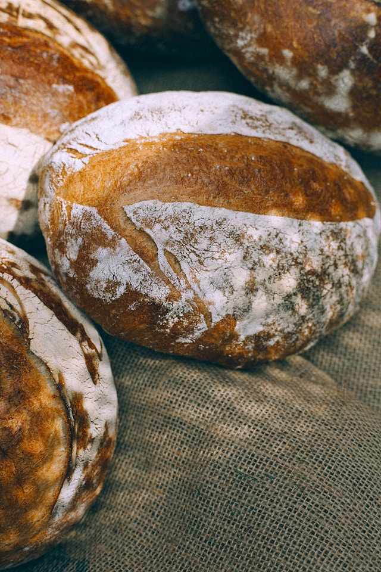

SOBRE NOSOTROS
Más que café. Un espacio para encontrarte, crear y disfrutar.
FIKA nace como un refugio urbano donde el café, las ideas y las personas se conectan. Inspirado en la tradición sueca de tomarse una pausa significativa, creamos un espacio amigable para relajarte, trabajar, inspirarte y compartir.
Nuestra Misión
Crear un espacio acogedor donde las personas disfruten de un café de calidad y de momentos significativos.
Nuestra Visión
Ser un referente en experiencias de café y comunidad, combinando tradición, sostenibilidad y creatividad.
Conoce a nuestro equipo
Un grupo de personas apasionadas por el café, la panadería artesanal y crear experiencias memorables para ti.
Y un ambiente cálido y acogedor pensado para que disfrutes de tu momento FIKA.
Nuestro Café

El olor a café recién hecho, sentirte bien, sentirte vivo, ver cómo pasa el tiempo y que tu mente se pare por esa pausa: es FIKA.
En nuestras cafeterías podrás disfrutar de un café 100% arábica con blend propio de diferentes orígenes. Con tostado natural, sin artificios, que permite disfrutar de tu "momento FIKA".
Nuestros Panes
Pan artesano elaborado y amasado a mano en el obrador con la mejor materia prima y masa madre. Seguiendo largos procesos de fermentación, lo que facilita la digestión y aporta mayor energía.
Podrás disfrutar de una gran variedad: pan con cereales, pan blanco, pan integral, bagel, focaccia, molletes de masa madre.